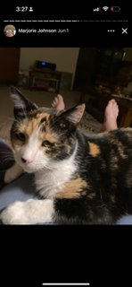

Marjorie's Hobbies
Throughout her life, Marjorie has found joy in a number of hands-on and creative hobbies that connect her to nature, animals, and family traditions.

Gardening: Marjorie loves growing vegetables and flowers. It keeps her active and lets her enjoy the beauty of nature at home.

Showing Miniature Horses: For decades, Marjorie and her husband Duane raised and showed miniature horses, traveling to shows and winning awards together.

Spending Time with Cali: Her cat Cali is a beloved companion. Whether cuddling on the couch or watching birds, they’re always together.